Tsukushinbo Traditional Japanese Cusine
Menu
List Menu
Sushi
Sashimi / Nigiri
Sake
About
Location
Home
Nigiri(2 pieces)/Sashimi(3 pieces) Menu
(Hover over entrees to see ingredients)
Aji
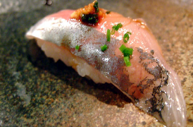
Spanish Mackeral
Albacore
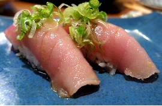
Tuna
<
Ama Ebi
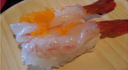
Sweet Shrimp
Ebi
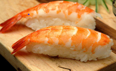
Cooked Shrimp
Mutsu
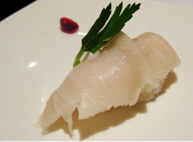
Super White Tuna
Toro
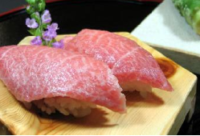
Fatty Tuna
Kani
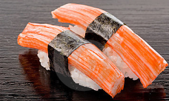
Crab
Sake
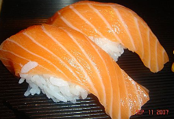
Salmon
Maguro
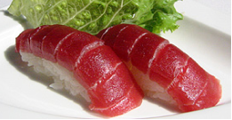
Tuna
Hamachi
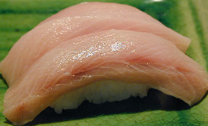
Yellowtail Tuna
Hirame
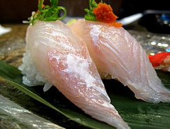
Fluke
Suzuki
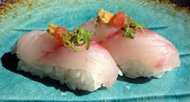
Stripe Sea Bass
Unagi
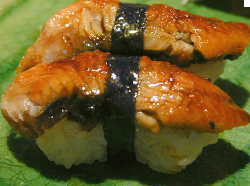
Eel
Tai
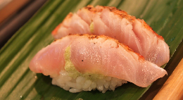
Red Snapper
Smoked Sake
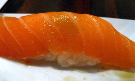
Smoked Salmon
Hotate
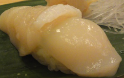
Scallop
Ikura
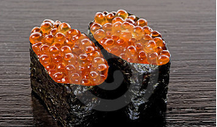
Salmon Roe
Tobiko
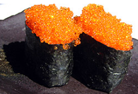
Flying Fish Roe
Tamago
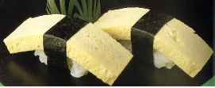
Egg Custard
Uni
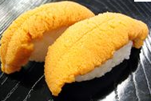
Sea Urchin
Kabashira
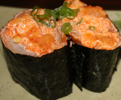
Cooked Spicy Scallop
Hokkigai
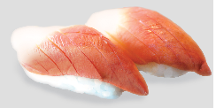
Surf Clam
Ika
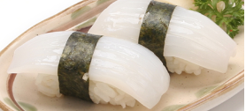
Squid
Tako
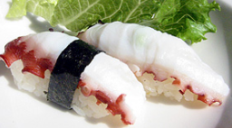
Octopus